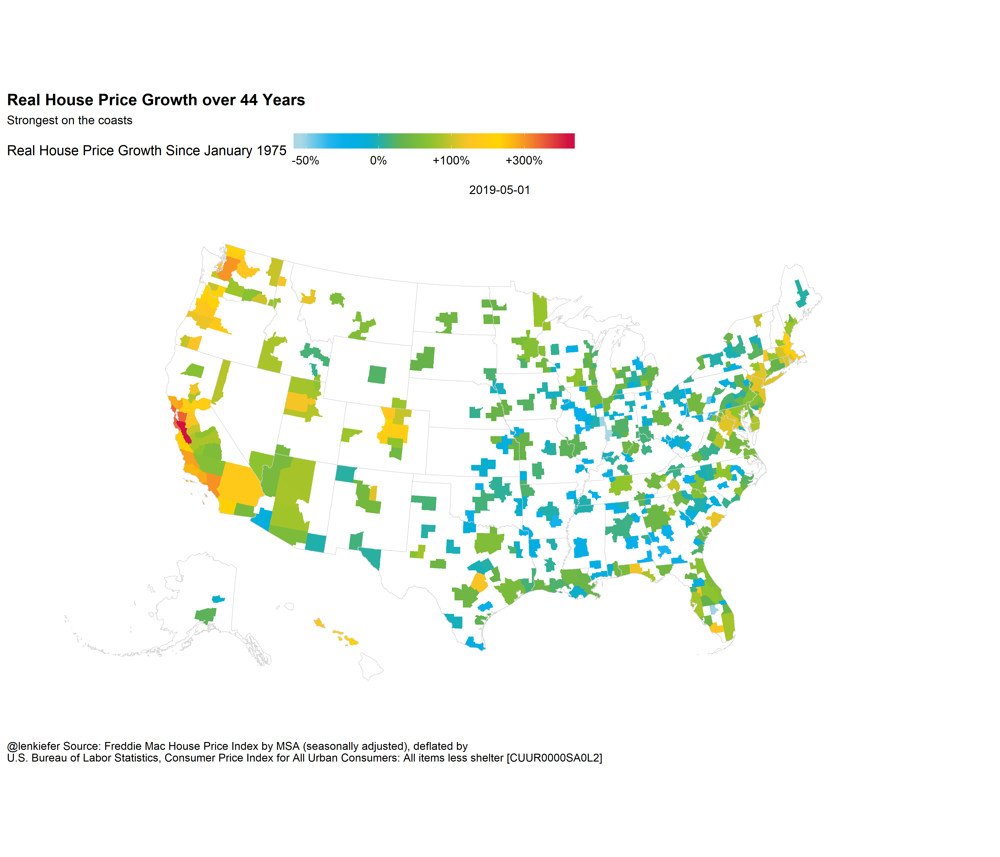

Let us take a look at house price trends in the United States and across states and metro areas.
Earlier this week I tweeted out a few charts on housing market trends.
In most of the middle part of the country over the past 44 years there has been little growth in real (inflation-adjusted) house prices.
— üìà ùôªùöéùöó ùô∫ùöíùöéùöèùöéùöõ üìä (@lenkiefer) July 10, 2019
In coastal states, a very different story. pic.twitter.com/PLbiNftha3
In this post we’ll analyze real house prices since 1975, and per usual use R to wrangle data and make plots. This code will replicate most of the charts I shared. In some of my tweets I used Tableau for maps (it was close at hand), but we’ll do it all with R here.
Code for the plots will be hidden in the details tabs.
Setup
Let’s review what we need to do to get started.
Mapping
To make maps, we’ll use the Urban Institute’s urbnmapr package library. When we will map metro (MSA) data, we’ll need to get the counties for each MSA via Census. The Freddie Mac House Price Index hasn’t yet been changed to the latest CBSA definitions so we will need to use older definitions. Though I work at Freddie Mac, I don’t work directly on the house price index.
Data
We will use two sources of data. We will get house prices from the Freddie Mac House Price Index available through May 2019. We will deflate the price indices by the U.S. Bureau of Labor Statistics, Consumer Price Index for All Urban Consumers: All items less shelter [CUUR0000SA0L2], which we can get via FRED.
Load Libraries, Wrangle Data
#####################################################################################
## Load libraries ----
#####################################################################################
suppressPackageStartupMessages({
library(data.table)
library(tidyverse)
library(urbnmapr)
library(colorblindr)
library(geofacet)
library(readxl)
library(httr)}
)
#####################################################################################
# wrangle data ----
#####################################################################################
# download house price data
dt <- fread("http://www.freddiemac.com/fmac-resources/research/docs/fmhpi_master_file.csv")
# create date
dt[,date:=as.Date(ISOdate(Year,Month,1))]
# get cpi data (via FRED)
df_cpi <- tidyquant::tq_get("CUUR0000SA0L2",get="economic.data",from="1975-01-01")
dt <- merge(dt,df_cpi,by="date")
# crease real house price index by dividing by first observation (Jan 1975) and scaling by 100
dt[, ":="(real_hpi=100*Index_SA/first(Index_SA) / (price/first(price))),
by=c("GEO_Name","GEO_Type") # make sure to use by
]
dt2 <-
dt[date==max(date) & GEO_Type=="State",] %>%
left_join(states,by=c("GEO_Name"="state_abbv")) %>%
data.table()
# get delineation file (use April 2018 version)
url1 <- "https://www2.census.gov/programs-surveys/metro-micro/geographies/reference-files/2018/delineation-files/list1.xls"
GET(url1, write_disk(tf <- tempfile(fileext = ".xls")))
df <- read_excel(tf,skip=2) #read in data from third row
# get rid of nasty spacesess in colnames
colnames(df) <- gsub('([[:punct:]])|\\s+','_',names(df))
# merge data
dt[date==max(date) & GEO_Type=="CBSA",] %>%
left_join(df, by=c("GEO_Code"="CBSA_Code")) %>%
# on right assignment
# http://www.win-vector.com/blog/2016/12/the-case-for-using-in-r/comment-page-1/
data.table() -> dt3 Other Packages
I’ll also use the recently updated cowplot package and the colorblindr package for the scale_color_OkabeIto and scale_fill_OkabeIto functions. Both of these packages are via Claus Wilke, the author of the excellent Fundamentals of Data Visualization.
If you have trouble with installing colorblindr, you can drop the scale_color_OkabeIto and replace them with something else and the rest of the code should work.
Custom Color Scales
Finally, we’ll create a custom color scale as described by [at]drsimonj in this post Creating corporate colour palettes for ggplot2.
Code for custom color scales
# Function for colors ----
# adapted from https://drsimonj.svbtle.com/creating-corporate-colour-palettes-for-ggplot2
#####################################################################################
## Make Color Scale ---- ##
#####################################################################################
my_colors <- c(
"green" = rgb(103,180,75, maxColorValue = 256),
"green2" = rgb(147,198,44, maxColorValue = 256),
"lightblue" = rgb(9, 177,240, maxColorValue = 256),
"lightblue2" = rgb(173,216,230, maxColorValue = 256),
'blue' = "#00aedb",
'red' = "#d11141",
'orange' = "#f37735",
'yellow' = "#ffc425",
'gold' = "#FFD700",
'light grey' = "#cccccc",
'purple' = "#551A8B",
'dark grey' = "#8c8c8c")
my_cols <- function(...) {
cols <- c(...)
if (is.null(cols))
return (my_colors)
my_colors[cols]
}
my_palettes <- list(
`main` = my_cols("blue", "green", "yellow"),
`cool` = my_cols("blue", "green"),
`cool2hot` = my_cols("lightblue2","lightblue", "blue","green", "green2","yellow","gold", "orange", "red"),
`hot` = my_cols("yellow", "orange", "red"),
`mixed` = my_cols("lightblue", "green", "yellow", "orange", "red"),
`mixed2` = my_cols("lightblue2","lightblue", "green", "green2","yellow","gold", "orange", "red"),
`mixed3` = my_cols("lightblue2","lightblue", "green", "yellow","gold", "orange", "red"),
`mixed4` = my_cols("lightblue2","lightblue", "green", "green2","yellow","gold", "orange", "red","purple"),
`mixed5` = my_cols("lightblue","green", "green2","yellow","gold", "orange", "red","purple","blue"),
`mixed6` = my_cols("green", "gold", "orange", "red","purple","blue"),
`grey` = my_cols("light grey", "dark grey")
)
my_pal <- function(palette = "main", reverse = FALSE, ...) {
pal <- my_palettes[[palette]]
if (reverse) pal <- rev(pal)
colorRampPalette(pal, ...)
}
scale_color_mycol <- function(palette = "main", discrete = TRUE, reverse = FALSE, ...) {
pal <- my_pal(palette = palette, reverse = reverse)
if (discrete) {
discrete_scale("colour", paste0("my_", palette), palette = pal, ...)
} else {
scale_color_gradientn(colours = pal(256), ...)
}
}
scale_fill_mycol <- function(palette = "main", discrete = TRUE, reverse = FALSE, ...) {
pal <- my_pal(palette = palette, reverse = reverse)
if (discrete) {
discrete_scale("fill", paste0("my_", palette), palette = pal, ...)
} else {
scale_fill_gradientn(colours = pal(256), ...)
}
}National Real House Price Trends
Let’s start by comparing trends in the U.S. house price index compared to the Consumer Price Index for all items less shelter.
Code for first plot
ggplot(data=dt[GEO_Type=="US",], aes(x=date,y=100*Index_SA/first(Index_SA)))+
geom_line(aes(color="House Price"),size=1.1)+
geom_line(aes(y=100*price/first(price), color="Consumer Prices Less Shelter"),size=1.1)+
# if colorblindr doesn't work, swap in something like (using custom palette):
# scale_color_mycol(palette="mixed",reverse=TRUE)+
colorblindr::scale_color_OkabeIto(name="Index")+
geom_ribbon(aes(ymax=100*Index_SA/first(Index_SA),ymin=100*price/first(price)),
color=NA,
fill="dodgerblue",alpha=0.25)+
scale_y_log10(breaks=c(75,100,200,400,800))+
# try new cowplot theme_minimal_hgrid theme
cowplot::theme_minimal_hgrid(font_size=12)+
theme(legend.position="top",
plot.caption=element_text(hjust=0,
# shrink relative to caption text size
size=rel(0.65)
))+
labs(y="Index, log scale",title="U.S. Nominal Prices: Jan1975-May2019",
subtitle="Shaded area is real house price appreciation" ,
caption="@lenkiefer Source: Freddie Mac House Price Index for the United states (seasonally adjusted)\nU.S. Bureau of Labor Statistics, Consumer Price Index for All Urban Consumers: All items less shelter [CUUR0000SA0L2]")
Plot repeats below outside the fold.
We see that from the mid 70s to the early 80s both nominal prices rose rapidly as the US experienced high levels of inflation. As the disinflation of the early 80s took hold both indices flattened out, though they both tended to rise over time. House prices in general outpaces consumer prices excluding shelter. The shaded area between the two indices represents the increase in real house prices.
We can plot it:
Code for second plot
ggplot(data=dt[GEO_Type=="US",], aes(x=date,y=real_hpi))+
geom_line(aes(color="Real House Price Index (Jan 1975=100)"),size=1.1)+
colorblindr::scale_color_OkabeIto(name="Index",order=2:1)+
geom_ribbon(aes(ymax=real_hpi,ymin=100),
color=NA,
fill="dodgerblue",alpha=0.25)+
scale_y_log10(breaks=c(75,100,150,200))+
cowplot::theme_minimal_hgrid()+
theme(legend.position="top",
plot.caption=element_text(hjust=0,
size=rel(0.65)))+
labs(y="Index, log scale",title="U.S. Real House Prices: Jan1975-May2019",
subtitle="Shaded area is real house price appreciation" ,
caption="@lenkiefer Source: Freddie Mac House Price Index for the United states (seasonally adjusted) deflated by \nU.S. Bureau of Labor Statistics, Consumer Price Index for All Urban Consumers: All items less shelter [CUUR0000SA0L2]")
Plot repeats below outside the fold.
This plot shows that real house prices are almost back to their prior peak, rising rapidly since 2012.
But let’s consider how it varies over space, first by states, and then by metros.
State trends
We can follow our earlier post facets in time and space to use the geofacet package and make a small multiple line chart arranged roughly in line with geography.
Code for third plot
ggplot(data=dt[GEO_Type=="State",], aes(x=date,y=real_hpi,ymin=100,ymax=real_hpi))+
geom_ribbon(alpha=0.25,fill="dodgerblue",color=NA)+
geom_line(color="dodgerblue")+
scale_y_log10(breaks=c(50,75,100,200,400))+
facet_geo(~GEO_Name)+
theme_minimal(base_size=8)+
theme(axis.text.x=element_text(size=rel(0.75)),
plot.caption=element_text(hjust=0))+
labs(title="Real House Price Growth over 44 Years",
y="Real House Price Index (Jan 1975=100, log scale)",
subtitle="Strongest on the coasts",
caption="@lenkiefer Source: Freddie Mac House Price Index by State (seasonally adjusted), deflated by\nU.S. Bureau of Labor Statistics, Consumer Price Index for All Urban Consumers: All items less shelter [CUUR0000SA0L2]")
Plot repeats below outside the fold.
This plot shows that price growth was strongest on the coasts, particularly the west coast.
Let’s focus on the cumulative growth since 1975 by state. We can plot a chorpleth map for the states.
Code for fourth plot
#note, drop DC from Choropleth map
ggplot(dt[GEO_Name !="DC" & GEO_Type=="State" &
date %in% as.Date(c("2019-05-01")),] %>%
left_join(states,by=c("GEO_Name"="state_abbv")) %>%
data.table(),
mapping = aes(long, lat, group = group, fill = log(real_hpi))) +
geom_polygon(color = "#ffffff", size = .25) +
coord_map(projection = "albers", lat0 = 39, lat1 = 45) +
theme(legend.title = element_text(),
legend.key.width = unit(.5, "in")) +
labs(fill = "Real House Price Growth\nSince January 1975") +
cowplot::theme_map()+
scale_fill_mycol(palette="cool2hot",discrete=FALSE,
breaks=c(log(50),log(100),log(200),log(400)),
labels=c("-50%","0%","+100%","+200%"),
limits=c(log(50),log(400)))+
labs(title="Real House Price Growth over 44 Years",
subtitle="Strongest on the coasts",
caption="@lenkiefer Source: Freddie Mac House Price Index by State (seasonally adjusted), deflated by\nU.S. Bureau of Labor Statistics, Consumer Price Index for All Urban Consumers: All items less shelter [CUUR0000SA0L2]")+
theme(legend.position="top",
plot.caption=element_text(hjust=0,
size=rel(0.6)),
legend.key.width=unit(2,"cm"))+facet_wrap(~date) Plot repeats below outside the fold.
Plot repeats below outside the fold.
Now we could remix our plot to display a small multiple map comparing several points in time.
Code for fifth plot
ggplot(dt[GEO_Name !="DC" & GEO_Type=="State" &
date %in% as.Date(c("1975-01-01","1985-01-01","1995-01-01","
2005-01-01","2010-01-01",
"2015-01-01","2019-05-01")),] %>%
left_join(states,by=c("GEO_Name"="state_abbv")) %>%
data.table(),
mapping = aes(long, lat, group = group, fill = log(real_hpi))) +
geom_polygon(color = "#ffffff", size = .25) +
coord_map(projection = "albers", lat0 = 39, lat1 = 45) +
theme(legend.title = element_text(),
legend.key.width = unit(.5, "in")) +
labs(fill = "Real House Price Growth Since January 1975") +
cowplot::theme_map()+
scale_fill_mycol(palette="cool2hot",discrete=FALSE,
breaks=c(log(50),log(100),log(200),log(400)),
labels=c("-50%","0%","+100%","+200%"),
limits=c(log(50),log(400)))+
labs(title="Real House Price Growth over 44 Years",
subtitle="Strongest on the coasts",
caption="@lenkiefer Source: Freddie Mac House Price Index by State (seasonally adjusted), deflated by\nU.S. Bureau of Labor Statistics, Consumer Price Index for All Urban Consumers: All items less shelter [CUUR0000SA0L2]")+
theme(legend.position="top",
plot.caption=element_text(hjust=0,
size=rel(0.6)),
legend.key.width=unit(2,"cm"))+facet_wrap(~date)
Plot repeats below outside the fold.
There you can see the gradual buildup in real prices over time.
MSA trends
But the state obscures dynamics within states, particularly large states like California, or Texas.
Let’s repeat our maps, but using MSA instead of state.

Here you can see the heterogeneity within California and Texas. In California the Bay Area is dark red with strong real house price growth, while the interior of the state is greenish representing much milder house price growth. Most of Texas is green, but Austin lights up in bright orange.
Zooming in on California, Texas.
And as above with states, we could do a small multiple map.
Code for MSA maps
dt[date %in% as.Date(c("1975-01-01","1985-01-01","1995-01-01","2005-01-01","2015-01-01","2019-05-01")) & GEO_Type=="CBSA",] %>% left_join(df, by=c("GEO_Code"="CBSA_Code")) %>%
data.table() -> dt4
dt4 %>%
mutate(county_fips=paste0(str_pad(FIPS_State_Code,2,"left","0"),
str_pad(FIPS_County_Code,3,"left","0"))) %>%
left_join(counties, by = c("county_fips")) %>%
#filter(state_name =="California") %>%
ggplot(mapping = aes(long, lat, group = group, fill = log(real_hpi))) +
geom_polygon(#color = "#ffffff",
size = .25) +
geom_polygon(data=states, aes(long,lat,group=group),fill=NA,color="lightgray",size=0.25)+
#scale_fill_gradientn(labels = scales::percent, guide = guide_colorbar(title.position = "top")) +
coord_map(projection = "albers", lat0 = 39, lat1 = 45) +
theme(legend.title = element_text(),
legend.key.width = unit(.5, "in")) +
labs(fill = "Real House Price Growth Since January 1975") +
cowplot::theme_map()+
scale_fill_mycol(palette="cool2hot",discrete=FALSE,
breaks=c(log(50),log(100),log(200),log(400)),
labels=c("-50%","0%","+100%","+300%"))+
labs(title="Real House Price Growth over 44 Years",
subtitle="Strongest on the coasts",
caption="@lenkiefer Source: Freddie Mac House Price Index by MSA (seasonally adjusted), deflated by\nU.S. Bureau of Labor Statistics, Consumer Price Index for All Urban Consumers: All items less shelter [CUUR0000SA0L2]")+
theme(legend.position="top",
plot.caption=element_text(hjust=0,
size=rel(0.6)),
legend.key.width=unit(2,"cm"))+facet_wrap(~date)
# Small multiple
dt4 %>%
filter(date==as.Date("2019-05-01")) %>%
mutate(county_fips=paste0(str_pad(FIPS_State_Code,2,"left","0"),
str_pad(FIPS_County_Code,3,"left","0"))) %>%
left_join(counties, by = c("county_fips")) %>%
#filter(state_name =="California") %>%
ggplot(mapping = aes(long, lat, group = group, fill = log(real_hpi))) +
geom_polygon(#color = "#ffffff",
size = .25) +
geom_polygon(data=states, aes(long,lat,group=group),fill=NA,color="lightgray",size=0.25)+
#scale_fill_gradientn(labels = scales::percent, guide = guide_colorbar(title.position = "top")) +
coord_map(projection = "albers", lat0 = 39, lat1 = 45) +
theme(legend.title = element_text(),
legend.key.width = unit(.5, "in")) +
labs(fill = "Real House Price Growth Since January 1975") +
cowplot::theme_map()+
scale_fill_mycol(palette="cool2hot",discrete=FALSE,
breaks=c(log(50),log(100),log(200),log(400)),
labels=c("-50%","0%","+100%","+300%"))+
labs(title="Real House Price Growth over 44 Years",
subtitle="Strongest on the coasts",
caption="@lenkiefer Source: Freddie Mac House Price Index by MSA (seasonally adjusted), deflated by\nU.S. Bureau of Labor Statistics, Consumer Price Index for All Urban Consumers: All items less shelter [CUUR0000SA0L2]")+
theme(legend.position="top",
plot.caption=element_text(hjust=0,
size=rel(0.6)),
legend.key.width=unit(2,"cm"))+facet_wrap(~date)
# CA map ----
dt4 %>%
filter(date==as.Date("2019-05-01")) %>%
mutate(county_fips=paste0(str_pad(FIPS_State_Code,2,"left","0"),
str_pad(FIPS_County_Code,3,"left","0"))) %>%
left_join(counties, by = c("county_fips")) %>%
filter(state_name =="California") %>%
ggplot(mapping = aes(long, lat, group = group, fill = log(real_hpi))) +
geom_polygon(#color = "#ffffff",
size = .25) +
geom_polygon(data=filter(states,state_name=="California"), aes(long,lat,group=group),fill=NA,color="lightgray",size=0.25)+
#scale_fill_gradientn(labels = scales::percent, guide = guide_colorbar(title.position = "top")) +
coord_map(projection = "albers", lat0 = 39, lat1 = 45) +
theme(legend.title = element_text(),
legend.key.width = unit(.5, "in")) +
labs(fill = "Real House Price Growth Since January 1975") +
cowplot::theme_map()+
scale_fill_mycol(palette="cool2hot",discrete=FALSE,
limits=c(log(35),log(605)),
breaks=c(log(50),log(100),log(200),log(400)),
labels=c("-50%","0%","+100%","+300%"))+
labs(title="Real House Price Growth over 44 Years",
subtitle="Strongest on the coasts",
caption="@lenkiefer Source: Freddie Mac House Price Index by MSA (seasonally adjusted), deflated by\nU.S. Bureau of Labor Statistics, Consumer Price Index for All Urban Consumers: All items less shelter [CUUR0000SA0L2]")+
theme(legend.position="top",
plot.caption=element_text(hjust=0),
legend.key.width=unit(2,"cm"))+facet_wrap(~date)
# TX Map ----
dt4 %>%
filter(date==as.Date("2019-05-01")) %>%
mutate(county_fips=paste0(str_pad(FIPS_State_Code,2,"left","0"),
str_pad(FIPS_County_Code,3,"left","0"))) %>%
left_join(counties, by = c("county_fips")) %>%
filter(state_name =="Texas") %>%
ggplot(mapping = aes(long, lat, group = group, fill = log(real_hpi))) +
geom_polygon(#color = "#ffffff",
size = .25) +
geom_polygon(data=filter(states,state_name=="Texas"), aes(long,lat,group=group),fill=NA,color="lightgray",size=0.25)+
#scale_fill_gradientn(labels = scales::percent, guide = guide_colorbar(title.position = "top")) +
coord_map(projection = "albers", lat0 = 39, lat1 = 45) +
theme(legend.title = element_text(),
legend.key.width = unit(.5, "in")) +
labs(fill = "Real House Price Growth Since January 1975") +
cowplot::theme_map()+
scale_fill_mycol(palette="cool2hot",discrete=FALSE,
limits=c(log(35),log(605)),
breaks=c(log(50),log(100),log(200),log(400)),
labels=c("-50%","0%","+100%","+300%"))+
labs(title="Real House Price Growth over 44 Years",
subtitle="Strongest on the coasts",
caption="@lenkiefer Source: Freddie Mac House Price Index by MSA (seasonally adjusted), deflated by\nU.S. Bureau of Labor Statistics, Consumer Price Index for All Urban Consumers: All items less shelter [CUUR0000SA0L2]")+
theme(legend.position="top",
plot.caption=element_text(hjust=0),
legend.key.width=unit(2,"cm"))+facet_wrap(~date)
Discussion
The trends in real house prices are persistent and reflect long-term trends in economic growth. Housing markets in inelastically supplied areas (like the Bay Area) are even more sensitive to economic growth. Areas with strong income growth but inelastic housing supply experience rapid increases in real house prices as more competition over a relativley fixed supply of housing bids up values.